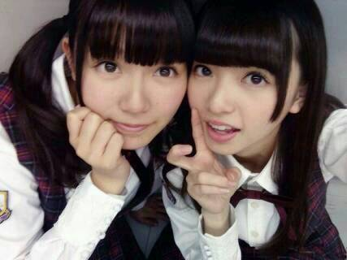

| 2014/04 19 Sat | ひめたん-OoO-その436 |

今日はBOMBさんに
撮影＆インタビューしていただきました
プリンシパルのことお話ししたよー
万理華とあすかりんとひめたん！3人！
5/9発売ですよろしくお願いします＼( ^O^ )／
さて、前回の記事では
またたくさんの質問に答えていただきました
ありがとうございました＊＊
ひめたんはお風呂とか移動中とか
ひとりの時間にコメント読むことが多いんだけど
みんながお話してくれてるみたいで（ ; ; ）
やってみないとわかんないけど
コメント返しされると嬉しいもんだね
ってやってみて思ったよひめたん。
これからも愛情たっぷりのひめたんのコメ返
楽しみに待っててくださいんふふ♪
とゆーことで
好きなアーティストさんですよ！
まあーみんないろいろ教えてくれて。
お！
そのジャンルは新鮮だあなー
今度聴いてみるーとか
そうだよねそうだよね
わかるよひめたんも大好きだよ
ひめがハタチになったら飲みに行こうーとか
楽しく読ませていただきました( ^O^ )
ひめたんのことも聞いてくれるー？
って誰かに制される前に書きまーす
◎Perfumeさん「リニアモーターガール」
◎back numberさん「思い出せなくなるその日まで」
◎GReeeeNさん「旅立ち」「涙空」「またね。」
◎Aqua Timezさん「しおり」「等身大のラブソング」
◎ゆずさん「逢いたい」「Yesterday and Tomorrow」
◎田村ゆかりさん「童話迷宮」「恋せよ女の子」
◎奥華子さん「初恋」「変わらないもの」
◎YUIさん「My Generation」「Namidairo」
◎ももいろクローバーZさん「オレンジノート」
とか結構よく聴きます(＊^^＊)
Perfumeさんback numberさん田村ゆかりさんは
ズルい言い方しますけど
全部好きです♪笑
共感してくれるひとはいるかにゃー
のぎのぎで何の曲好き？って
よく聞かれるから何度でも答えますよー
◎ぐるぐるカーテン
◎やさしさなら間に合ってる
◎音が出ないギター
聴くのはこの3曲が好き！

よーし明日は
横浜で個別握手会あります！
久々の関東圏での個握、
しかもあしたは1、2、3、5部に
参加させていただくので
こんなに握手するのはじめてー∩^O^∩
嬉しいーほんとにありがとうみなさん！
とゆーことで
お着替えもする予定なので
楽しみにしててください＊＊

 ポムポムプリンの美味しい食べ方しってる？
ポムポムプリンの美味しい食べ方しってる？
やめて食べないで（ ; ; ）
ちっちゃい頃ひめたんは
ポムポムプリンちゃんの貯金箱
使ってたよ（ ; ; ）誰も聞いてないよねごめん
もし、普通の高校生だったら
何の部活入りますかー？
放送部入りたかったなー
地元の高校で放送部入ろうと思ってました＊
ダンス部も憧れではあるけど
なんてゆーかイケイケな感じの空気に
馴染める気がしないとゆーか。
ひめたんは竹の子好き？
お！3年やってきて初めて聞かれたかも！
嫌いなんです(´・ω・｀)結構嫌い
ひめたんビームって
どんなタイミングで出るようになったんですか？
初ビームのお話してくださーい！
これ結構聞かれるんだけど
みんなー乃木ここはチェックしてくれてますかー？
過去のやつはもう見れないのかなー
2ndの乃木ここが初びーむでしたよー
 もし、ひめたんが1人暮らしした時、
もし、ひめたんが1人暮らしした時、
部屋にどいやさんが出てきたらどうする？
せっかく遊びにきてくれたんだから
両足の指をがんばって広げてもらって
ひめたんびーむをマスターしてもらいたい！
ひめたんの夢はパンダになることです
やめてよ言い切らないでよちょっと( >_< )
ちなみに年長さんの頃は
漫画「屋」さんになりたかったそう。
生ちゃんが不意にケーキ焼くねって
言ったらどうする？
1、きっぱり断る
2、やんわりとオブラートに包んだ感じで断る
3、笑ってごまかす「ハハッ、違うよ、違うよ...」
3の誤魔化しきれてなさがなんかねー
これは迷わずに1。
あたしだって言う時は言いますよ！
ひめたんびーむでごはんがたけました
うそだあ(￣∀￣)
「全握」と「個握」って
どんな違いがあるんですか？
全握はミニライブが観れたり
握手1レーンに2人とかメンバーがいるので
いろんなメンバーと握手できたりします
個握は純粋に握手のみで、
推しメンちゃんとゆったりお話ができます
そんな感じかな？
ひめたんの日記の
コメント欄下２ケタに46を踏んだ方へ
手書きでコメ返するコーナー
＼ ひめたん46 ／

いつもたくさんのコメント
ありがとうございます＊
やだー質問するの楽しすぎる( ^O^ )
ひめたんにひとことも
じっくり読んだよーありがとね♪♪
今日は久々に自炊した日でした！
みんな明日は日曜日だね
リフレッシュしてねおやすみーね
(＊´・ω・＊)
コメント(496)
2014/04/19 23:48